HIST 270 · History of China · Chapter 24 · Day 2
Waking the Sleepers
Young Chinese Blamed Their Own Culture, Then Took to the Streets
1915–1919 · New Culture and May Fourth
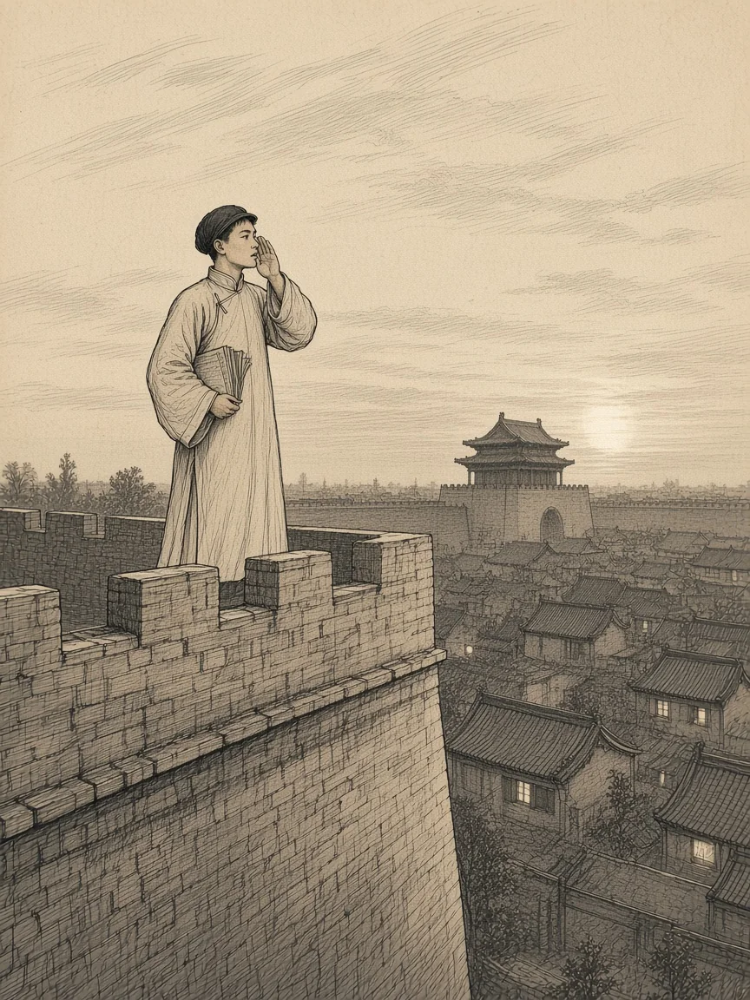
Hook: picture a whole country asleep in a room with no windows. If you could shout and wake a few people, but they still could not get out, would you do it? One writer asked exactly that question in 1918. By the end of today you will read his answer in his own words.
Last class the dynasty fell and the republic failed: by 1916 the warlords held the power. Today young Chinese decide the problem runs deeper than politics. First they attack their own culture (Part 1, the New Culture Movement and Lu Xun). Then, in 1919, they take to the streets (Part 2, May Fourth).
Plan: a short lecture, then you read Lu Xun on your own; a second short lecture, then our May Fourth video, which stops itself for two questions; then an exit ticket.
Reading Guide coverage today: Review Questions 6, 7, and 9.
Image: A student calls out over the rooftops of Beijing before dawn, about 1918. AI illustration created for this course in the 1920s lianhuanhua (picture-story book) style; an interpretation, not a historical record.
Part 1 of 2 · 1915–1922
Part 1: New Culture
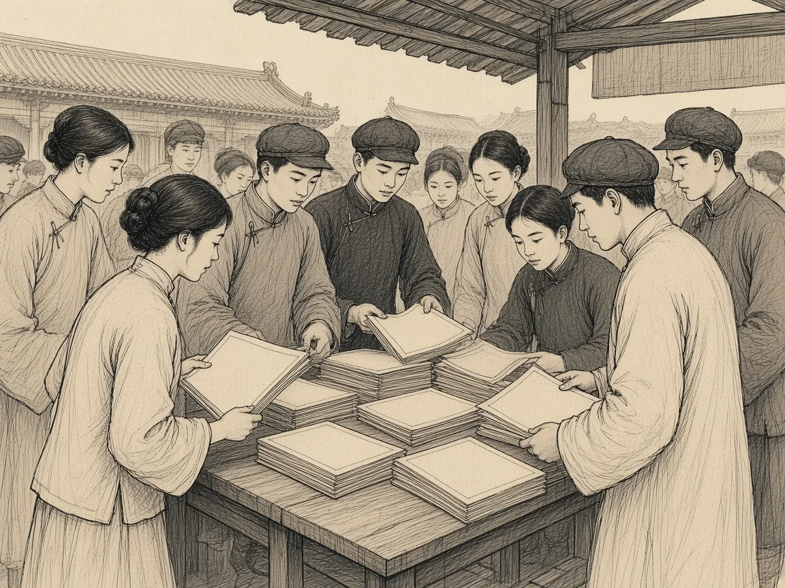
A magazine, a university, and a writer told the young that the old culture itself was the sickness.
Part 1 covers 1915 to 1922: Reading Guide Questions 6 and 7.
Point at the picture: by 1919 hundreds of new magazines for young readers had appeared. Ask: what would make you line up for a magazine?
Image: Students crowd a Beijing bookstall to read the new magazines, about 1918. AI illustration created for this course in the 1920s lianhuanhua (picture-story book) style; an interpretation, not a historical record.
Recap · Day 1 · 1912–1916
Recap: By 1916 the Republic Was a Shell
1912 The Qing fell; a republic replaced it.
1913–1916 Yuan Shikai crushed parliament, then tried to be emperor.
1916 on Warlords held the power.
So Some young Chinese asked: was the problem deeper than politics?
Thirty seconds of recap. Changing the government had not worked: a revolution in 1911, a constitution, elections in 1913, and still China ended up with a would-be emperor and then the warlords (Day 1).
Ebrey's point (p. 420): the failure of the republic convinced many educated young people that political change was not enough. The problem, they decided, lay in Chinese culture itself: the family, the Confucian virtues, even the written language.
Bridge: in 1915, while Yuan prepared his throne, a magazine editor in Shanghai began to say exactly that.
Q6 · The editor · 1915
In 1915 Chen Duxiu Started a Magazine for the Young
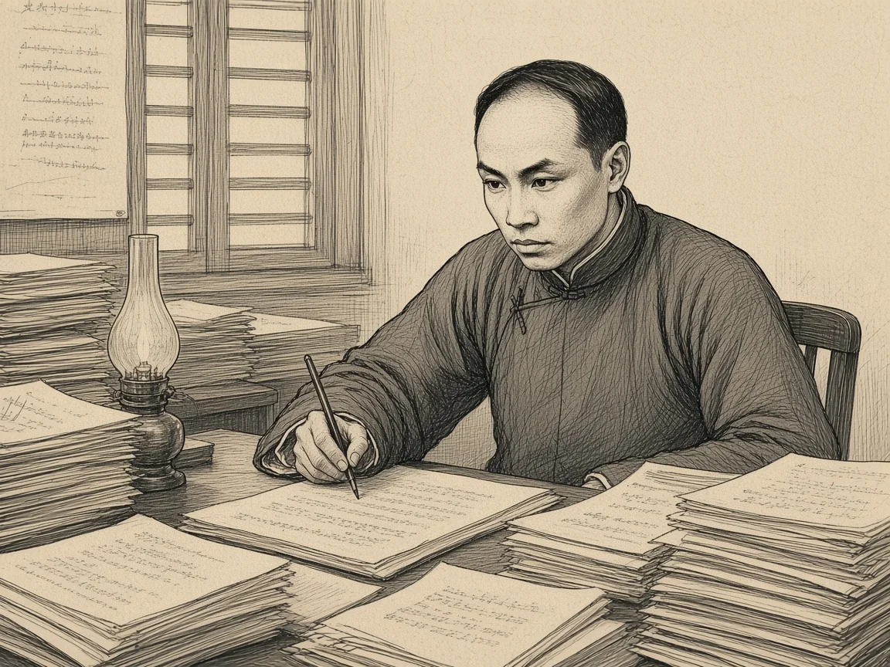
Sept. 1915, Shanghai: Youth Magazine , soon New Youth
Chen had passed the old exams himself
He told the young to defy their elders
Sources: Ebrey, Ch. 24, p. 420.
On-screen boxes, full wording: In September 1915 Chen Duxiu founded Youth Magazine in Shanghai; from 1916 it was called New Youth . / Chen knew the old learning from the inside: he passed the county examination in 1896 before turning against the system. / His first essay told young people to challenge the authority of their elders.
Names: Chen Duxiu (chuhn doo-shyow), 1879 to 1942, editor of New Youth (Xin qingnian ).
The story: Chen was born in 1879 in Anhui to a gentry family. At seventeen he passed the county-level exam; the next year he failed the provincial exam in Nanjing and gave up on the system. He studied in Japan, took part in the 1911 revolution, and by 1915 was, in Ebrey's words, "a zealous advocate of individual freedom" (p. 420).
Reading Guide Question 6 asks you to copy the sentence on p. 420 that begins "In the first": "In the first issue of New Youth in 1915, Chen challenged the long-standing Confucian value of deference toward elders." Read it aloud.
Why it matters: the leaders of the New Culture Movement were not outsiders. They had memorized the classics and written the exam essays, and they rejected the tradition they knew best.
Ask: why might it matter that Chen had passed the old exams himself?
Image: Chen Duxiu at work in his Shanghai editorial office, 1915. AI illustration created for this course in the 1920s lianhuanhua (picture-story book) style; an interpretation, not a historical record. Likeness after a public-domain photograph of Chen (Wikimedia Commons).
Q6 · The attack on Confucius · 1915–1919
Chen Called the Old Virtues a "Slavish Morality"
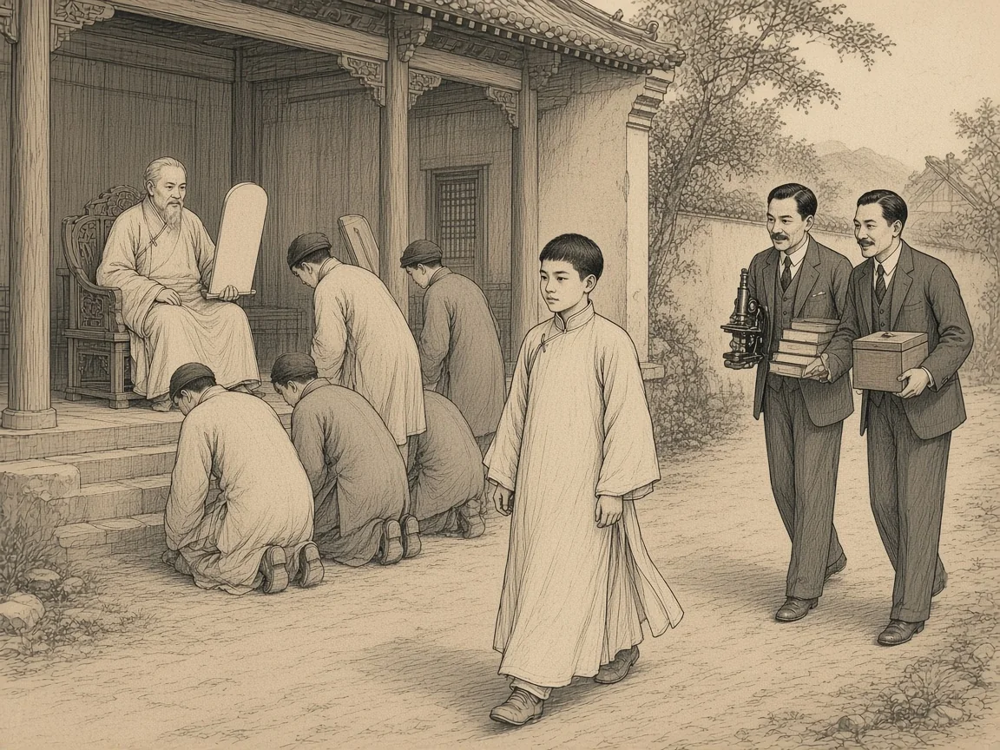
Loyalty, filial piety, chastity: "a slavish morality"
Instead: "Mr. Democracy" and "Mr. Science"
Choose your own school, work, and marriage
Sources: Ebrey, Ch. 24, p. 420; Teng and Fairbank, China's Response to the West .
On-screen boxes, full wording: Chen called "loyalty, filial piety, chastity, and righteousness" nothing but "a slavish morality" (Ebrey, p. 420). / In January 1919 he summed up the magazine's program as two gentlemen, "Mr. Democracy" and "Mr. Science." / Young people began challenging their parents' right to decide their school, work, and marriage (Ebrey, p. 420).
Chen's first essay, "Call to Youth," asked the young to be "independent, not servile" and "scientific, not imaginative." He wrote: "We must be thoroughly aware of the incompatibility between Confucianism and the new belief, the new society, and the new state" (Ebrey, p. 420).
Unpack the four virtues: obey the ruler (loyalty), obey your parents (filial piety), for women stay faithful even to a dead husband (chastity), and do your duty (righteousness). These held up the old family and the old state. That is the "sever China from its Confucian past" part of Reading Guide Question 6.
Point at the picture: the student turns his back on the patriarch and the ancestral tablets and walks toward Mr. Science and Mr. Democracy.
Ask: which of the four virtues do you think young readers found easiest to reject, and why?
Image: The young choose "Mr. Science" and "Mr. Democracy" over the old family, an allegory. AI illustration created for this course in the 1920s lianhuanhua (picture-story book) style; an interpretation, not a historical record.
Q6 concept · The New Culture Movement
Concept: The New Culture Movement
Concept
New Culture Movement
A late-1910s campaign, based at Beijing University, to replace Confucian values with modern ones.
Goals: science, democracy, freedom, progress
Enemies: patriarchy, "blind adherence to tradition"
Voice: New Youth . Home: Beijing University
Sources: Ebrey, Ch. 24, pp. 420, 426.
Full definition: the campaign of the late 1910s and early 1920s, led by teachers and writers at Beijing University, to replace Confucian values and the classical written language with science, democracy, individual freedom, and writing in everyday speech.
Ebrey: "the newly reorganized Beijing University played a central role in this New Culture movement" (p. 420). Her list of goals and evils (p. 426): "Nationalism, patriotism, progress, science, democracy, and freedom were the goals; imperialism, feudalism, warlordism, autocracy, patriarchy, and blind adherence to tradition were the evils to be opposed."
This slide is the "core intellectual objectives" half of Reading Guide Question 6. Have students write two goals and two evils.
Not everyone agreed (one line; the online Lecture 3 has the full story): after touring Europe in 1918 to 1920, Liang Qichao decided Western culture was "too materialistic" and feared China would lose its "national essence" (Ebrey, p. 426). The debate over what to keep never ended.
Q6 · Beijing University · 1917
At Beijing University, Cai Yuanpei Gave the Radicals a Home
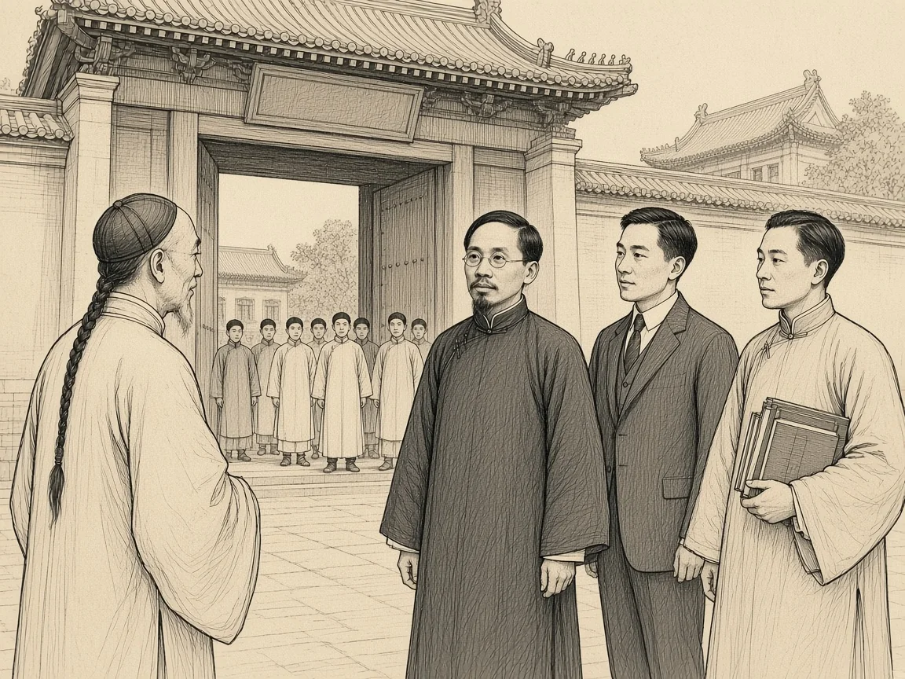
Jan. 1917: Cai Yuanpei becomes president
Open to every school of thought
Chen made dean; New Youth moves to Beijing
Sources: Ebrey, Ch. 24, p. 420; Timothy B. Weston, The Power of Position (2004).
On-screen boxes, full wording: In January 1917 Cai Yuanpei, a top graduate of the old examinations, became president of Beijing University. / He opened it to every school of thought, from old-style classicists to anarchists. / He made Chen Duxiu dean of letters, and New Youth moved to Beijing with him.
Names: Cai Yuanpei (tsye ywen-pay), 1868 to 1940. Beijing University, also called Peking University or Beida, founded 1898.
Ebrey does not name Cai, but he is the man who "reorganized" the university (p. 420). He had earned the highest exam degree, the jinshi , then joined the revolutionaries and studied in Germany. He wanted a real university, not a training school for officials, so he hired scholars of every kind. Old-style classicists who still wore the queue taught in the same buildings as radicals; that is why one professor in the picture still has a queue in 1917.
Cai visited Chen at his hotel again and again until Chen agreed to become dean of letters. After that, the magazine's editors and the university's professors were nearly the same people, and students began writing magazines of their own.
Why it matters (Question 6, "centered at Beijing University"): the movement had an institution behind it. China's leading university gave the radicals jobs, students, and prestige.
Image: Cai Yuanpei welcomes professors of every school at the gate of Beijing University, 1917. AI illustration created for this course in the 1920s lianhuanhua (picture-story book) style; an interpretation, not a historical record. Likeness after a public-domain photograph of Cai (Bain News Service, about 1910, Library of Congress).
Q6 · Hu Shi · 1917
Hu Shi Said, "A Dead Language Can Never Produce a Living Literature"
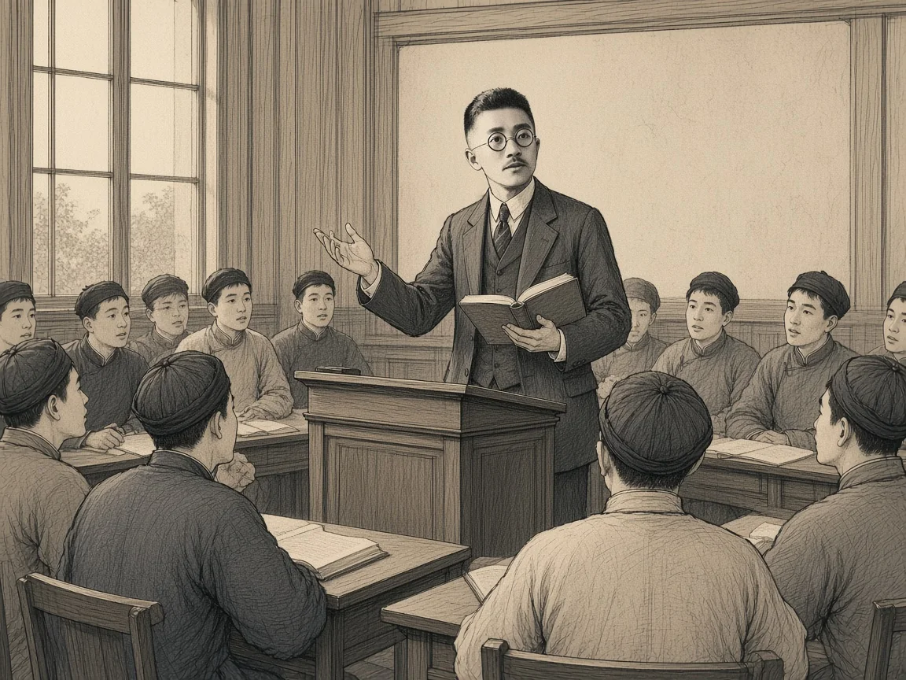
Studied at Cornell and Columbia, 1910–1917
Write the language people actually speak
Joined Beijing University at 26
Sources: Ebrey, Ch. 24, pp. 420–421; Jerome B. Grieder, Hu Shih and the Chinese Renaissance (1970).
On-screen boxes, full wording: Hu Shi studied in the United States, at Cornell and Columbia, from 1910 to 1917. / In January 1917 New Youth printed his proposals for reforming literature: write the language people actually speak. / That autumn, aged 26, he joined the Beijing University faculty.
Names: Hu Shi (hoo shir), 1891 to 1962.
Ebrey: "the leader of the movement to write in the vernacular was Hu Shi." His slogan: "A dead language," Hu declared, "can never produce a living literature" (p. 420). He went to Cornell in 1910 on a Boxer Indemnity scholarship, then to Columbia, where he studied with the philosopher John Dewey.
His eight proposals included: do not imitate the ancients, avoid stale classical phrases, and do not avoid the words of everyday speech.
How radical was this? Ebrey: "Hu's assertions came dangerously close to declaring Chinese civilization dead" (p. 421). For two thousand years, classical Chinese had been the mark of an educated man.
Ask: what did Hu mean by calling classical Chinese "a dead language"?
Image: Hu Shi lectures at Beijing University, 1917. AI illustration created for this course in the 1920s lianhuanhua (picture-story book) style; an interpretation, not a historical record. Likeness after a public-domain photograph of Hu (1922, Wikimedia Commons).
Q6 concept · The vernacular
Concept: Vernacular Writing
Concept
Vernacular (baihua )
Writing Chinese the way people speak it, instead of in the classical language of the old books.
吾欲往 wu yu wang : classical
我要去 wo yao qu : vernacular
Both mean "I want to go."
Sources: Ebrey, Ch. 24, pp. 420–421; John DeFrancis, The Chinese Language: Fact and Fantasy (1984).
Full definition: the vernacular (baihua , "plain speech") is written Chinese that follows everyday speech; classical Chinese (wenyan ) was the compressed literary language of the classics, the histories, and the exams, which took years of training to read.
Read the example: the classical sentence uses words nobody said aloud by 1900; the vernacular one is what a person in Beijing would actually say. Reading classical Chinese took years; reading the vernacular needed only literacy.
Ebrey notes the cost Hu admitted: classical Chinese "had allowed speakers of mutually unintelligible dialects to communicate with each other and thus had been a source of unity." His answer: a vernacular literature would spread one standard dialect, "much as standard vernaculars had gained hold in France and Germany" (p. 421).
Vernacular writing was not new in 1917: the great Ming novels were written in it. What was new was the claim that serious writing should be.
Ask: who gained, and who lost, when the vernacular replaced classical Chinese?
The Chinese characters on this slide are real, typeset text (not an image).
Q6 · The vernacular wins · 1918–1922
By 1922 the Schools Taught the Vernacular
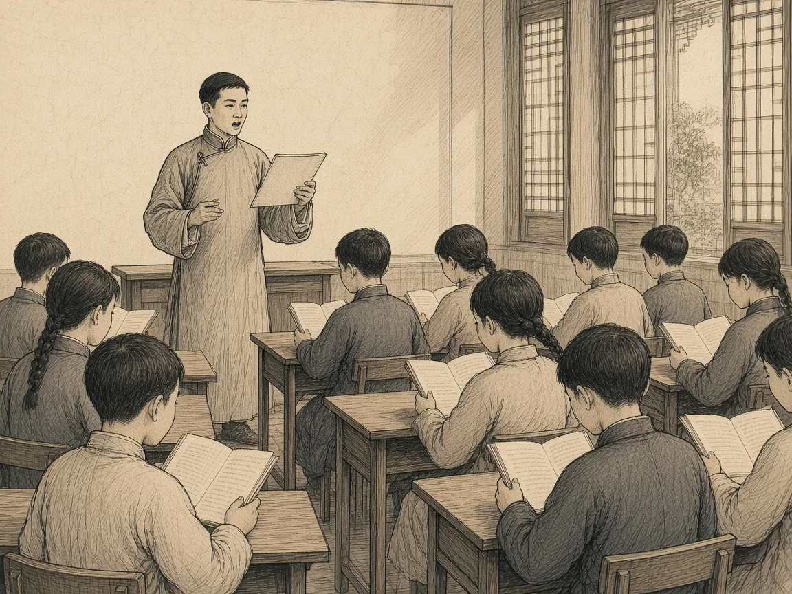
Jan. 1918: New Youth all in the vernacular
1919: hundreds of new youth magazines
1920: vernacular primers ordered for schools
Sources: Ebrey, Ch. 24, pp. 421–422; Chow Tse-tsung, The May Fourth Movement (1960).
On-screen boxes, full wording: From January 1918 New Youth was written entirely in the vernacular. / By 1919 hundreds of new magazines for young readers had appeared. / In January 1920 the Ministry of Education ordered vernacular textbooks for the first grades, and by 1922 the classical textbooks were to be phased out of elementary schools.
Ebrey: "Chen Duxiu concurred with Hu, and soon New Youth was written entirely in vernacular Chinese" (p. 421). "By 1919 New Youth had been joined by many other periodicals aimed at young people aspiring for a New China" (p. 422).
Date note: Ebrey says the ministry decided in 1921. The orders actually came in January and April 1920, with 1922 set as the year the old textbooks would go (Chow, The May Fourth Movement ). The slide uses those dates; the online Lecture 3 does the same.
Why it matters: within five years an idea in a magazine had become the rule in the schools, and reading, and politics, opened to far more people.
Image: Children read aloud from new vernacular primers, about 1920. AI illustration created for this course in the 1920s lianhuanhua (picture-story book) style; an interpretation, not a historical record.
Q6 · Family and women · 1918–1923
Young People Defied Their Parents over School, Work, and Marriage
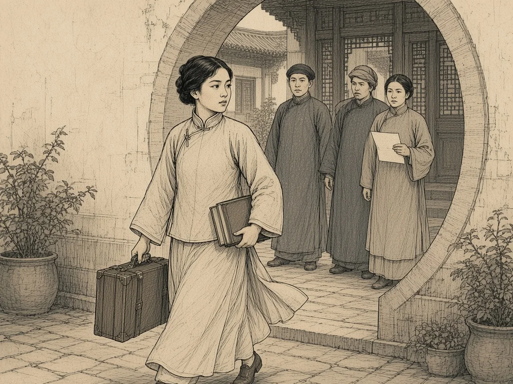
The target: the Confucian family
1918: Ibsen's A Doll's House in New Youth
Could a woman leave home like Nora?
Sources: Ebrey, Ch. 24, pp. 420, 427.
On-screen boxes, full wording: The New Culture writers attacked the Confucian family: arranged marriage, the authority of parents, and the chastity code for women. / In June 1918 New Youth printed Ibsen's play A Doll's House in Chinese. / Young women debated whether, like the play's heroine Nora, they could leave home and make their own lives (Ebrey, p. 427).
The critique of the family: Ebrey says young people "began challenging the authority of their parents to make decisions for them about school, work, and marriage" (p. 420). Filial piety was the root of the old order; attacking it meant attacking the whole system.
Women's emancipation: A Doll's House (1879) ends with Nora walking out on a husband who has treated her like a doll. Hu Shi helped translate it for the June 1918 Ibsen issue. In China "Nora" became a word for a rebel daughter. Lu Xun was more doubtful: in a 1923 lecture, "What Happens After Nora Leaves Home?", he asked how a woman without money of her own could survive once she walked out.
Lu Xun also attacked the chastity code in New Youth (1918): it honored women only for dying.
Coverage note: this is one slide on a big subject. The full story of women's lives, 1900 to 1927 (foot binding, Qiu Jin, girls' schools, divorce laws, and the villages), is Reading Guide Question 10, taught in the online Lecture 3, Part 3.
Ask: what would a young woman in 1920 need, besides courage, to leave home?
Image: A young woman leaves her family's courtyard, about 1920. AI illustration created for this course in the 1920s lianhuanhua (picture-story book) style; an interpretation, not a historical record.
Q7 · Lu Xun · 1881–1906
Lu Xun Went to Japan to Study Medicine
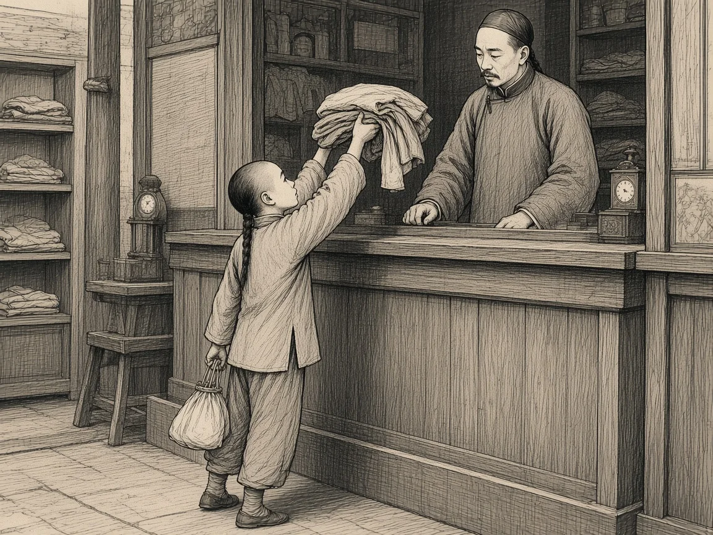
Born Zhou Shuren, Shaoxing, 1881
Old-style doctors failed to save his father
1904: medical school in Sendai, Japan
Sources: Ebrey, Ch. 24, p. 422; Lu Xun, Preface to Call to Arms (1922).
On-screen boxes, full wording: Lu Xun was the pen name of Zhou Shuren, born in Shaoxing in 1881. / As a boy he pawned the family's clothes to pay for strange cures, but traditional doctors failed to save his father, who died in 1896. / In 1902 he went to Japan, and in 1904 he entered the medical school at Sendai, hoping Western medicine could help China.
Names: Lu Xun (loo shyun), 1881 to 1936, born Zhou Shuren.
Ebrey: "One of the first to write well in the vernacular was Lu Xun (1881–1936). In 1902, Lu had gone to Japan to study medicine after traditional doctors had failed to cure his father of tuberculosis" (p. 422).
Stop here. Do not tell the slide story yet: what made him quit medicine is the first thing students read in the packet. Say: "He went to Japan to become a doctor. He came home a writer. Read why in his own words."
Picture note: the boy wears the queue, which is accurate for the 1890s under the Qing. In 1903, in Tokyo, Zhou cut his off.
Image: The boy Zhou Shuren pawns his family's clothes to pay for his father's medicines, Shaoxing, 1890s. AI illustration created for this course in the 1920s lianhuanhua (picture-story book) style; an interpretation, not a historical record.
Your turn · The Iron House · about 18 minutes · on your own
Your Turn: Read Lu Xun's Own Story
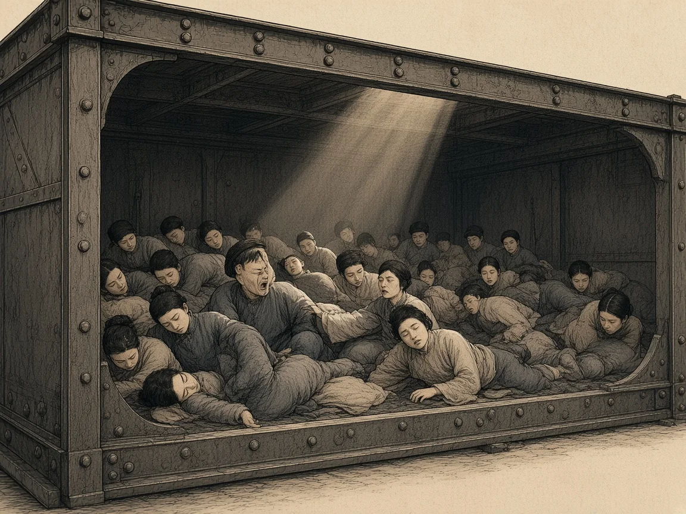
Read both parts of the Preface (about 8 minutes).
Answer the six short questions in your Day 2 worksheet. Add the paragraph, e.g., (Preface, 1.4).
Keep the worksheet open; you will use it again for the video.
Open the reading ↗ Open the Day 2 worksheet ↗
Reading: "The Iron House: Lu Xun, Preface to Call to Arms (1922)," the course's own translation (link above; the packet is self-contained). Part 1 is medical school in Sendai and the lantern slide; Part 2 is Beijing, the iron house, and the turn to writing.
Full instructions: read both parts, about 8 minutes; then answer the six short questions in Part 1 of the Day 2 worksheet (the dream, the slide, the decision, the tool, the iron house, the turn), one sentence each with a paragraph number such as (Preface, 1.4). Work on your own. Students keep the worksheet open for the video and exit ticket and download one .txt at the end of class. (The packet page still has its own five longer questions; tell students to answer in the worksheet today.)
Hand-off: about 18 minutes, individual work. Reading about 8, questions about 10. Give a 3-minute warning at 15 minutes.
Nothing in the packet depends on the "Diary of a Madman" homework. Do not assume students have read it.
Circulate. Where to point a stuck student: the dream (Preface, 1.1); the slide (1.4); the first task and the tool (1.7); the iron house (2.6); the turn (2.7 and 2.8).
Content note, from the packet: Part 1 describes a public execution and Lu Xun's harsh judgment of his own people. Read it as his argument, written years later for a purpose.
Image: The iron house, Lu Xun's image of a sleeping China. AI illustration created for this course in the 1920s lianhuanhua (picture-story book) style; an interpretation, not a historical record.
Q7 · After the reading · 1918–1925
Lu Xun Turned His Diagnosis into Stories
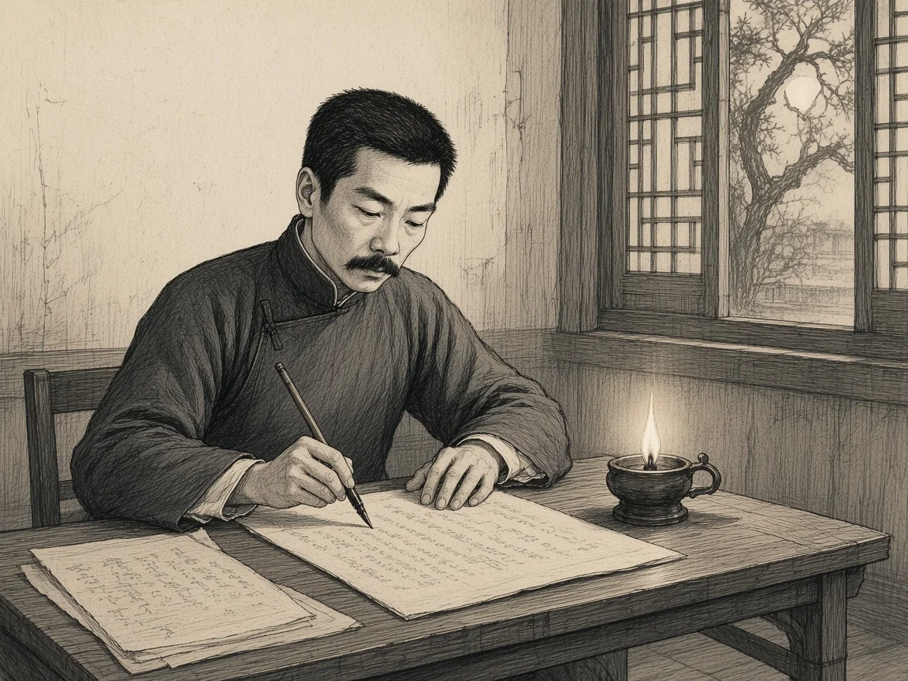
Concept
"National character"
The idea that a people's shared habits of mind explain the fate of their nation.
1918: "Diary of a Madman" in New Youth
1921: Ah Q calls every defeat a victory
Blame China's own flaws, not foreigners
Sources: Ebrey, Ch. 24, pp. 422–423.
Debrief the packet in one minute: Lu Xun quit medicine because he decided China's sickness was in its spirit, not its bodies, and literature could change the spirit. His friend's answer about the iron house (if a few wake, you cannot say there is no hope of breaking it) is why he started to write.
On-screen boxes, full wording: In May 1918 New Youth printed his first vernacular story, "Diary of a Madman," signed for the first time "Lu Xun." / In "The True Story of Ah Q" (1921 to 1922), a poor village laborer who is beaten, mocked, and cheated calls every humiliation a victory. / Lu Xun blamed China's plight on China's own flaws more than on foreigners.
Full definition: "national character" was the idea that a people's shared habits of mind explain its fate. Foreign writers had used it against China; Lu Xun turned it into self-criticism.
Reading Guide Question 7 asks you to copy the sentence on p. 422 that begins "Lu Xun put": "Lu Xun put the blame for China's plight on China's own flaws much more than on the flaws of foreigners." (Read the full sentence in Ebrey.)
"Diary of a Madman" is the chapter's assigned story. If students have read it, ask one of them what the madman discovers in the old books; if not, do not spend time on it here.
Image: Lu Xun writes his first story by lamplight in a Beijing guild hall, April 1918. AI illustration created for this course in the 1920s lianhuanhua (picture-story book) style; an interpretation, not a historical record. Likeness after a public-domain photograph of Lu Xun (1925, Wikimedia Commons).
Part 2 of 2 · 1914–1919
Part 2: May Fourth
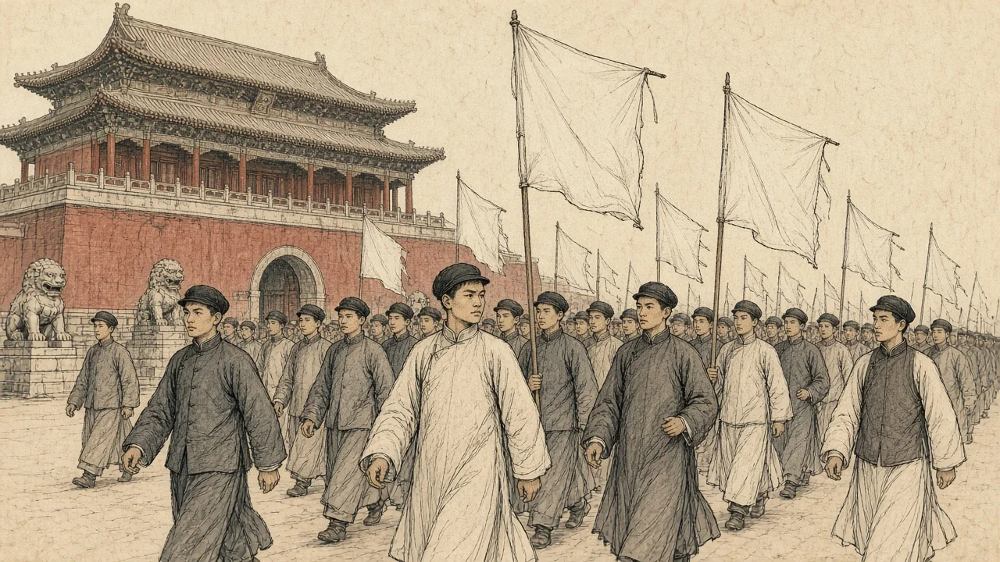
A world war, a stolen province, and a peace treaty sent the students into the streets.
Part 2: Reading Guide Question 9. This short lecture sets up the video: it gives the background the video assumes, so the video can tell the story of the day itself.
Point at the picture: May 4, 1919, Tiananmen, the Gate of Heavenly Peace. Do not tell what happens next; that is the video's job. Ask: what could make three thousand students march in one afternoon?
Image: Students march past Tiananmen, May 4, 1919. AI illustration created for this course in the 1920s lianhuanhua (picture-story book) style; an interpretation, not a historical record. The red wash on the gate is the style's one color accent for big moments; the same image opens the video.
Q9 · The international catalyst · 1898–1914
In 1914 Japan Seized Germany's Holdings in Shandong
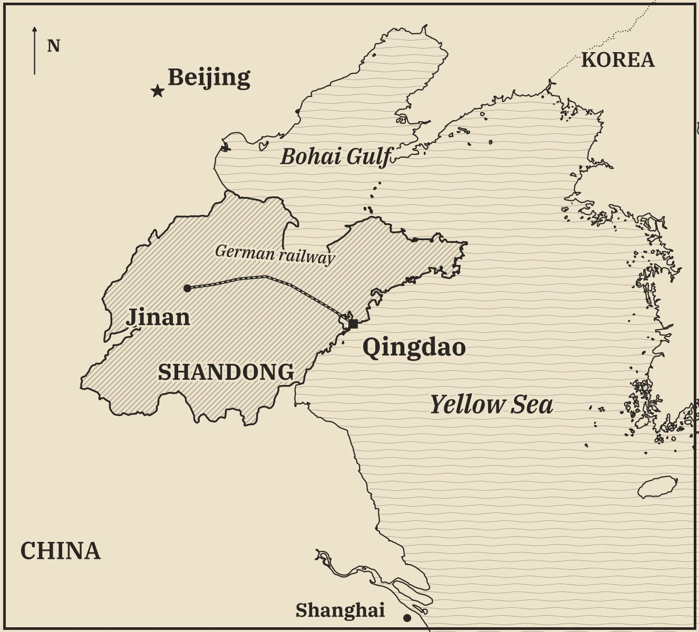
1898: Germany leases Qingdao and a railway
Shandong: home of Confucius
Nov. 1914: Japan takes Qingdao
Sources: Ebrey, Ch. 24, p. 425; Frederick R. Dickinson, War and National Reinvention (1999).
On-screen boxes, full wording: In 1898 Germany forced China to lease it the port of Qingdao on Jiaozhou Bay, with rights to a railway inland to Jinan and mines along it. / Shandong was the home province of Confucius and Mencius. / When World War I began, Japan, Britain's ally, declared war on Germany, and in November 1914 Japanese troops took Qingdao and the railway.
Names: Shandong (shahn-dung), Qingdao (ching-dow), Jinan (jee-nahn).
Key term, leasehold: territory China still owned on paper but a foreign power ran, with its own troops, police, and railways. Germany's lease was for 99 years.
Ebrey: "In 1914, Japan as an ally of Britain and France seized German territories in China" (p. 425). Japan declared war on August 23; its troops landed on Shandong's north coast, outside the German zone, and marched across neutral Chinese territory. Qingdao surrendered on November 7. China, neutral, could do nothing.
Point at the map: Beijing in the north; Shandong hatched; Qingdao on the coast; the railway inland to Jinan. Japan now held all of it.
Why Shandong stung: at Paris, China's diplomats would call it "the cradle of Chinese civilisation" and "a Holy Land for the Chinese."
Image: Map of Shandong and the German railway, about 1914, drawn for this course in the deck's ink style from Natural Earth public-domain map data; province outline is the modern one. Labels typeset in the edit.
Q9 · The domestic catalyst · 1915
In 1915 Japan Forced the Twenty-One Demands on Yuan Shikai
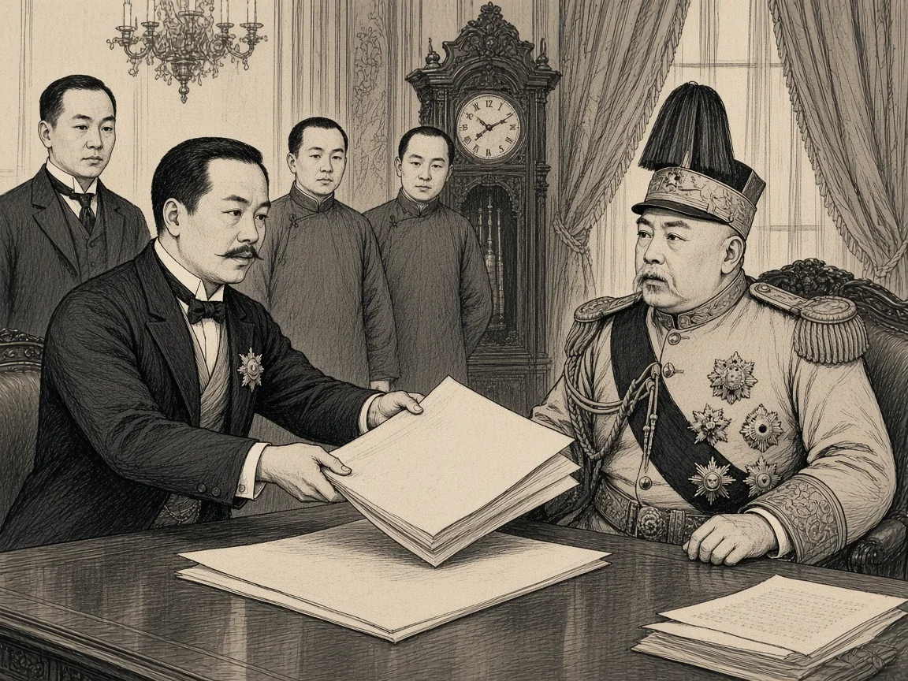
Jan. 1915: Japan's secret demands
One group: Japan keeps Shandong
May 1915: Yuan gives in
Sources: Ebrey, Ch. 24, pp. 419, 425.
On-screen boxes, full wording: In January 1915 Japan's minister in Beijing secretly handed President Yuan Shikai the Twenty-One Demands. / Some of them confirmed Japan's position in the former German leasehold in Shandong (Ebrey, p. 425). / Under a Japanese ultimatum, Yuan accepted most of them in May 1915, and students marked the date as National Humiliation Day.
You met the Twenty-One Demands on Day 1. Ebrey: "When a wave of anti-Japanese protests swept China, Japan dropped the last group but gave Yuan an ultimatum to accept the rest." The day he gave in "was in later years called National Humiliation Day."
Date note: Ebrey gives May 7. The ultimatum came on May 7 and Yuan accepted on May 9; both dates were remembered, May 9 more often.
Make the connection: a college student of twenty in 1919 had been sixteen in 1915. Schools held humiliation days every May. The slogans of May 4, 1919, "Cancel the Twenty-One Demands" and "Return our Qingdao," came straight from 1915.
Names: Hioki Eki, Japan's minister in Beijing, presented the demands on January 18, 1915.
Image: Japan's minister Hioki Eki presents the Twenty-One Demands to Yuan Shikai, Beijing, January 1915. AI illustration created for this course in the 1920s lianhuanhua (picture-story book) style; an interpretation, not a historical record. Likenesses after public-domain photographs of Yuan (1915) and Hioki (Wikimedia Commons).
Q9 · China joins the war · 1916–1918
China Joined the Allies and Sent 140,000 Workers to France
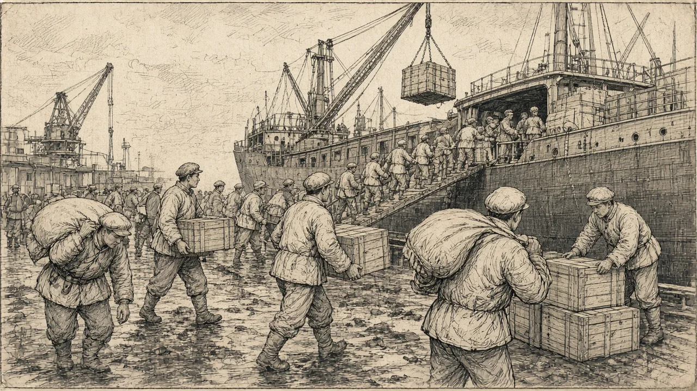
1917: China declares war on Germany
About 140,000 laborers went to France
China expected a reward at the peace
Sources: Ebrey, Ch. 24, p. 425; Xu Guoqi, Strangers on the Western Front (2011).
On-screen boxes, full wording: In 1917 China joined the Allies and declared war on Germany. / China sent no soldiers, but about 140,000 laborers went to France to unload ships, dig trenches, and keep the war going. / China expected to be rewarded at the peace conference.
Ebrey: "although China sent no combatants, it did send some 140,000 laborers to France, where they unloaded cargo ships, dug trenches, and otherwise provided manpower of direct use to the war effort" (p. 425).
Recruiting began in 1916, before China declared war; many of the men came from Shandong itself. Several thousand died of disease, accidents, and shelling (Xu Guoqi).
One line on Reading Guide Question 8 (taught in the online Lecture 2): while Europe fought, Chinese factories boomed, and a new class of businessmen and workers grew in the cities. Those workers matter in the video.
Image: Men of the Chinese Labour Corps unload a cargo ship in France, about 1918. AI illustration created for this course in the 1920s lianhuanhua (picture-story book) style; an interpretation, not a historical record. The same image appears in the video.
Q9 concept · Wilson's promise · 1918
Students Believed Wilson's Promise of Self-Determination
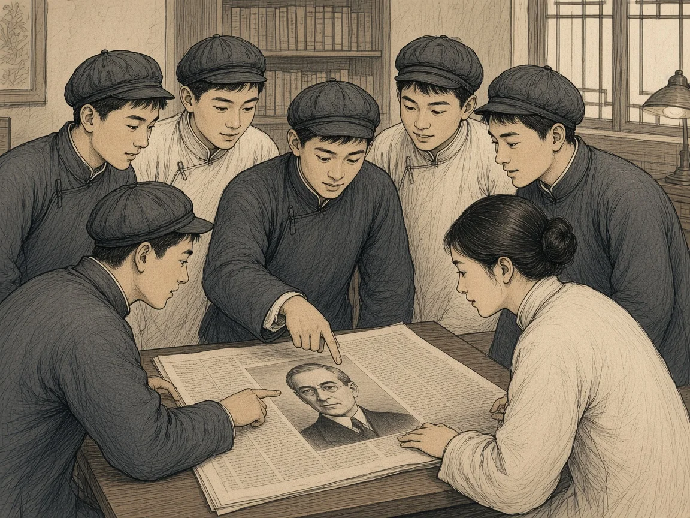
Concept
Self-determination
The idea that every nation should choose its own government and control its own territory.
Jan. 1918: Wilson's Fourteen Points
Students read his speeches and believed them
They expected Shandong back
Sources: Ebrey, Ch. 24, p. 425.
Full definition: self-determination is the principle that a people should decide its own government and keep its own territory, free from foreign rule. President Woodrow Wilson made it famous in his Fourteen Points of January 1918.
Ebrey: "China was thus expecting some gain from the Allies' victory, particularly in light of the stress placed on national self-determination by the U.S. president, Woodrow Wilson" (p. 425).
On-screen boxes, full wording: In January 1918 Wilson's Fourteen Points promised a peace built on fairness to all peoples. / Chinese students read his speeches in translation and took them at face value. / They expected the peace conference to return Germany's rights in Shandong to China.
Students called Wilson "the number one good man in the world"; the video uses that line. Set up the irony without spoiling it: ask, what happens to hope like this if it is disappointed?
Image: Students in Beijing read about President Wilson, late 1918. AI illustration created for this course in the 1920s lianhuanhua (picture-story book) style; an interpretation, not a historical record.
Q9 · The decision · 1917–1919
Secret Deals Had Already Promised Shandong to Japan
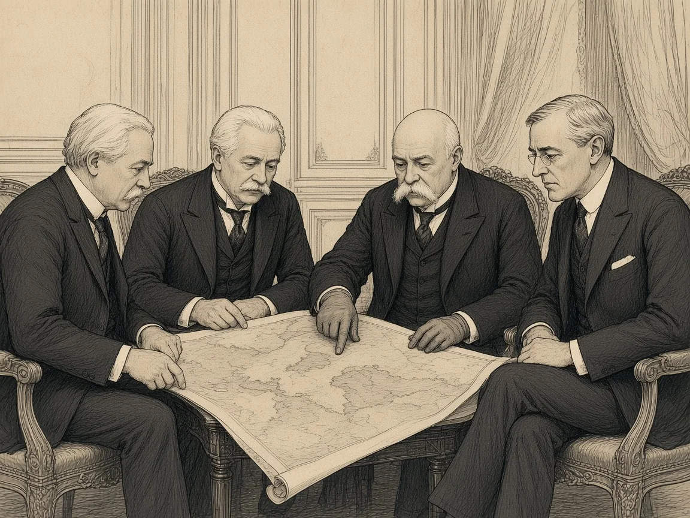
1917: Britain, France, Italy back Japan
Japan threatens to quit the League
Apr. 30, 1919: Shandong goes to Japan
Sources: Ebrey, Ch. 24, p. 425; Margaret MacMillan, Paris 1919 (2001).
On-screen boxes, full wording: In 1917 Britain, France, and Italy had secretly agreed to support Japan's claim to Germany's rights in Shandong. / At Paris, Japan threatened to stay out of Wilson's new League of Nations unless it got Shandong. / On April 30, 1919, the leaders of the great powers gave Germany's Shandong rights to Japan.
Ebrey: "Unfortunately for China, Japan had reached secret agreements with Britain, France, and Italy to support Japan's claim to German rights in Shandong" (p. 425). In return Japan had sent destroyers to the Mediterranean against German submarines (MacMillan).
Key term, Versailles: the palace near Paris where the treaty with Germany was signed on June 28, 1919. People say "the Treaty of Versailles" for the whole settlement with Germany.
Correct the textbook gently: Ebrey says the Chinese delegates "were not even admitted." In fact China had two seats at the full conference and its diplomat Wellington Koo spoke to the great powers in January 1919; what China lacked was a place where the real decisions were made. The video shows Koo.
Who decided: the "Big Four" in the picture: Lloyd George (Britain), Orlando (Italy), Clemenceau (France), and Wilson (United States). Wilson, who wanted the League above all, gave way.
Image: The Big Four decide the fate of Shandong, Paris, April 1919. AI illustration created for this course in the 1920s lianhuanhua (picture-story book) style; an interpretation, not a historical record. Likenesses after the public-domain US Army Signal Corps photograph of the Big Four, May 27, 1919.
Q9 · The domestic catalyst · 1918
Beijing's Own Government Had Signed Away Shandong Too
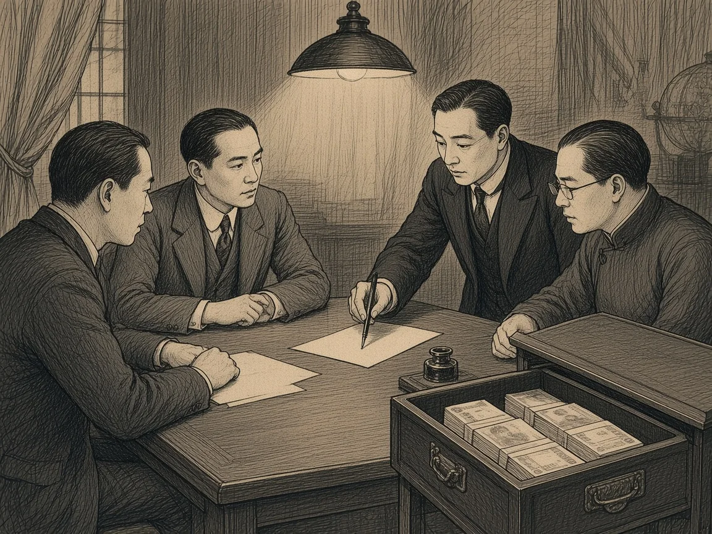
The warlord government ran on Japanese loans
Sept. 1918: it "gladly agreed" on Shandong
Students blamed three officials
Sources: Ebrey, Ch. 24, p. 425; MacMillan, Paris 1919 .
On-screen boxes, full wording: In 1918 the warlord government in Beijing, led by Duan Qirui, depended on large secret loans from Japan. / In September 1918 it signed notes that "gladly agreed" to Japan's arrangements for the Shandong railway. / Students blamed three pro-Japanese officials, and when the news from Paris came, they went after them.
Ebrey: "Japanese diplomats had also won the consent of the warlord government that held Beijing in 1918" (p. 425). At Paris, Japan produced that 1918 note, and it sank China's case.
The three officials (names students will hear in the video): Cao Rulin (tsow roo-lin), minister of communications, who had negotiated Japanese loans; Zhang Zongxiang (jahng dzung-shyahng), China's minister to Japan, who signed the 1918 note; and Lu Zongyu (loo dzung-yoo), who had been minister to Japan in 1915 and later headed a bank funded by Japan. Students called them traitors.
This is the "domestic catalyst" half of Reading Guide Question 9: the anger was aimed at China's own government as well as at Japan and the great powers.
Image: Officials of the Beijing government and Japanese bankers arrange a secret loan, 1918. AI illustration created for this course in the 1920s lianhuanhua (picture-story book) style; an interpretation, not a historical record. No individual likenesses intended.
Before you watch · words in the video
Words to Know Before You Watch
Tiananmen "Gate of Heavenly Peace," Beijing
Versailles Where the treaty was signed, June 28, 1919
Shandong rights Germany's port, railway, and mines
Boycott Refusing to buy a country's goods
Strike Workers stop work together
"Traitors" Cao Rulin, Zhang Zongxiang, Lu Zongyu
Two minutes. Read the six terms and say each name aloud so students recognize it in the narration: Tiananmen (tyen-ahn-mun), Cao Rulin (tsow roo-lin), Zhang Zongxiang (jahng dzung-shyahng), Lu Zongyu (loo dzung-yoo).
Full wording: Tiananmen, the Gate of Heavenly Peace, the main gate of the old imperial palace in Beijing, where the students gathered. Versailles, the palace near Paris where the peace treaty with Germany was signed on June 28, 1919. Shandong rights: the Qingdao leasehold, the railway to Jinan, and the mines Germany had held since 1898. Boycott: refusing to buy a country's goods (here, Japanese goods). Strike: workers stopping work together (here, in Shanghai). "Traitors": the students' name for three pro-Japanese officials.
Also in the video: Wellington Koo (China's diplomat at Paris), Zhaojialou (Cao Rulin's house), and the American photographer Sidney Gamble.
What to watch for (say it, it is not on the slide): who joined the students after May 4, and what they finally won.
Watch · about 17 minutes · the video pauses itself
Watch: May Fourth 1919
Video placeholder
"May Fourth 1919: China's Students Take to the Streets" (16:47) goes here once it is uploaded.
Answer the two pause questions in your Day 2 worksheet ↗ .
Video: "May Fourth 1919: China's Students Take to the Streets (HIST 270 Clip B)," made for this course: a Seek Learning Podcast episode (hosts Elin and Todd) from Professor Austin's script, with illustrations created for this course in the lianhuanhua style. Runtime 16:47. Unlisted on YouTube (https://youtu.be/OGnQ4Omrc-0; on YouTube its title adds "Seek Learning Podcast"). Embedded with youtube-nocookie; it loads when this slide comes up. Open the deck from the website (https), not as a local file, or YouTube refuses to play (Error 153). To change the video: set VIDEO_ID at the top of day2_slides.py and rebuild.
The video has built-in pause cards; no cueing needed. Pause 1 runs from about 5:44 to 5:59 and asks: At the peace conference, which country was given Germany's old rights in Shandong? Pause 2 runs from about 12:00 to 12:14 and asks: Besides students, name one group in Shanghai that went on strike in June 1919. Each card stays up about 15 seconds; pause the player on the card and give about a minute for students to type the answer in the Day 2 worksheet. No answers appear on screen.
The exit-ticket card comes up at about 16:21 and holds until about 16:41, then a closing title runs to 16:47. Stop there and go to slide X, which repeats the question so students can type their answer.
What the video covers, so you do not repeat it: May 4 at Tiananmen and the march to the Legation Quarter, Wellington Koo at Paris, the fire at Cao Rulin's house, the June arrests, the Shanghai strikes and boycott, the dismissal of the three officials, China's refusal to sign at Versailles, Shandong's return in 1922, and the 1921 founding of the Communist Party. Its closing answers the "turning point" half of Reading Guide Question 9; the Reading Guide's quotation for Question 9 (p. 425, "On May 4, 1919, when word arrived ...") describes its opening scene.
Backup if YouTube will not play: show slides O to U again and read the exit-ticket question; the online Lecture 4 (Part 1) teaches the same events with real photographs.
No other image on this slide: the video takes the space.
Exit ticket · about 3 minutes · on your own
Exit Ticket
Why do historians call May Fourth a turning point?
One or two sentences, with one piece of evidence from the video.
Exit ticket, about 3 minutes, then 1 minute to download and submit. Full wording (same as the video's closing card): In one or two sentences: Why do historians call May Fourth a turning point? Give one piece of evidence from the video.
Answers go to Canvas only; they stay private.
After class · On your own
After Class: Go Deeper in the Online Lectures
Full wording: Ch. 24 Lecture 3, "Youth Is Like Early Spring": New Youth, Beijing University, the vernacular, Lu Xun, and Part 3 on women's new lives (Review Question 10). Lecture 4, "The Day the Students Marched": Shandong, Paris, and May Fourth with real photographs (Question 9), then Sun Yatsen, the Soviet alliance, the United Front, and the Northern Expedition (Question 11). Reading Guide: today covered Review Questions 6, 7, and 9. The two background essays retell the same stories in prose.
Not covered in class, and taught in the online decks: Question 8 (World War I and Chinese industry: Lecture 2's Pierian Spring), Question 10 (women: Lecture 3, Part 3), and Question 11 (the First United Front and reunification: Lecture 4, Part 2). Tell students these are on the quiz.
"Diary of a Madman" remains the chapter's assigned story.
Sources and image credits
Sources
Patricia Buckley Ebrey, China: A Cultural, Social, and Political History , Chapter 24, "Remaking China (1900–1927)," pp. 419–427.
Lu Xun, Preface to Call to Arms (Nahan ), dated December 3, 1922; course translation, "The Iron House" . Background essays "Youth Is Like Early Spring" and "The Day the Students Marched" ; online decks Ch. 24 L3 and Ch. 24 L4 .
Chow Tse-tsung, The May Fourth Movement (1960); Ssu-yu Teng and John K. Fairbank, China's Response to the West (1954); Timothy B. Weston, The Power of Position (2004); Jerome B. Grieder, Hu Shih and the Chinese Renaissance (1970); Frederick R. Dickinson, War and National Reinvention (1999); Xu Guoqi, Strangers on the Western Front (2011); Margaret MacMillan, Paris 1919 (2001).
Video: "May Fourth 1919: China's Students Take to the Streets (HIST 270 Clip B)," made for this course, 2026 (16:47; YouTube, unlisted).
Illustrations: created for this course with AI in the style of a 1920s Shanghai picture-story book (lianhuanhua ); interpretations, not historical records. Likenesses of real people follow public-domain photographs. Map drawn for this course from Natural Earth public-domain data.
Sources behind the deck. Every picture in this deck is an illustration created for this course (AI, in one lianhuanhua style, approved by Steven for Day 2) or a map drawn for the course; none is a historical photograph. Real photographs of the same people and events are in the online Lectures 3 and 4. Per-file credits are in images/ch24-day2/SOURCES.tsv.